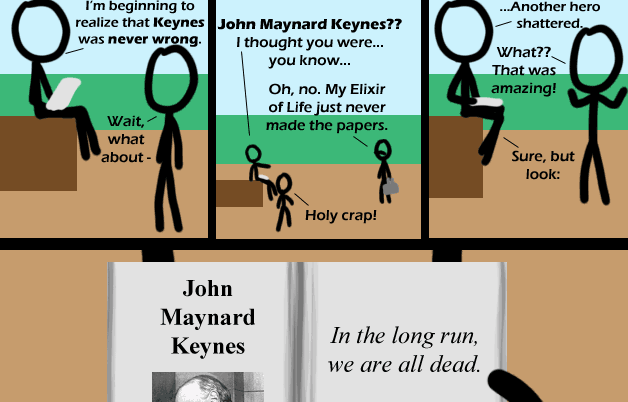

Comic JK 387
When I Feel Like It
⇤
<
?
>
⇥

⇤
<
?
>
⇥
Forum
.
RSS
.
Digg
.
Facebook
.
Reddit
.
Twitter
.
Stumbleupon
Unless we can avoid killing ourselves for the next 30 or so years. Then if Audry de Grey is right, age becomes arbitrary (Awesome beard man!) > A men with a beard like de Grey Can't be wrong. "I forgot to add that 'in the long run' was on the order of a trillion years." i'm probably gonna facepalm when someone explains this but i don't get it >The point is Keynes made a fountain of youth! So he's awesome! But he also wrote 'In the long run we are all dead' - so he sucks again. Unless he is emotionally dead after being alive for so long. Then he's still right. I'd prefer he was alive and his theories were dead. They don't work and just provide rationale for more government spending. Investment is what pulls a country out of a depression. That may be why Sweeden, which at that time was more fiscally conservative, recovered sooner than the US. I guess your mother will get him, if the Revolution doesn't come first.